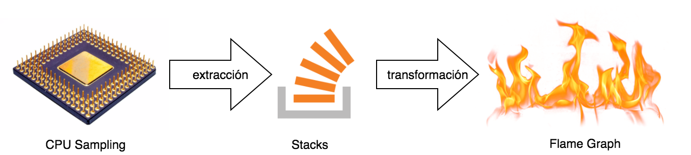

Flame Graphs
Profiling de CPU en la JVM
Jerónimo López / @jerolba13 / Febrero / 2018
Acerca de Jero
Disclaimer
No soy ningún hacker de perf, de JVM, ni de sistemas.
Objetivo de la charla
- En qué consiste el profiling
- Diferentes técnicas de profiling
- De donde sale y cómo leer un Flame Graph
- Cómo generar un Flame Graph
Localizar y resolver problemas con Flame Graph
Premature optimization
“We should forget about small efficiencies, say about 97% of the time: premature optimization is the root of all evil”
Donald Kunth
¿Nunca te ha pasado...?
Conseguir algo como esto
Flame Graphs
- Inventados por Brendan Gregg
- Referencia en análisis de performance
- Desarrollado en Joyent y Netflix
- http://www.brendangregg.com/flamegraphs.html
Flame Graphs
“Flame graphs are a visualization of profiled software, allowing the most frequent code-paths to be identified quickly and accurately”
Profiling vs Sampling
- Profiling: instrumenta el código para medir el tiempo de ejecución de cada método.
- Sampling: toma muestras del estado de la máquina con cierta frecuencia.
Profiling mediante sampling
- Recolectar la mayor cantidad posible de stacks por segundo sin afectar el rendimiento
- Representarlos visualmente:
- Hot methods
- Call Tree
- Flame Graph
Hot Methods
Call tree
Flame Graph

Proceso
¿Cómo es un sample en jstack?
"main" #1 prio=5 os_prio=31 tid=0x00007f904c00c000 nid=0x1703 runnable [0x0000700000219000]
java.lang.Thread.State: RUNNABLE
at com.jerolba.codemotion.ElQuijote.toLowerCase(ElQuijote.java:98)
at com.jerolba.codemotion.ElQuijote.lambda$toLowerCase$3(ElQuijote.java:71)
at com.jerolba.codemotion.ElQuijote$$Lambda$6/2030562336.apply(Unknown Source)
at java.util.stream.ReferencePipeline$3$1.accept(ReferencePipeline.java:193)
at java.util.ArrayList$ArrayListSpliterator.forEachRemaining(ArrayList.java:1374)
at java.util.stream.AbstractPipeline.copyInto(AbstractPipeline.java:481)
at java.util.stream.AbstractPipeline.wrapAndCopyInto(AbstractPipeline.java:471)
at java.util.stream.ReduceOps$ReduceOp.evaluateSequential(ReduceOps.java:708)
at java.util.stream.AbstractPipeline.evaluate(AbstractPipeline.java:234)
at java.util.stream.ReferencePipeline.collect(ReferencePipeline.java:499)
at com.jerolba.codemotion.ElQuijote.toLowerCase(ElQuijote.java:71)
at com.jerolba.codemotion.ElQuijote.readBook(ElQuijote.java:43)
at com.jerolba.codemotion.ElQuijote.main(ElQuijote.java:30)
¿Cómo es un sample en perf?
java 339/363 [002] 7628263.042557: cycles:
ffffffff8104f45a native_write_msr_safe ([kernel.kallsyms])
ffffffff8102f8bc intel_pmu_enable_all ([kernel.kallsyms])
ffffffff81029b14 x86_pmu_enable ([kernel.kallsyms])
ffffffff81142a77 perf_pmu_enable ([kernel.kallsyms])
ffffffff81027bfa x86_pmu_commit_txn ([kernel.kallsyms])
ffffffff811434f0 group_sched_in ([kernel.kallsyms])
ffffffff811439b2 __perf_event_enable ([kernel.kallsyms])
ffffffff8113f620 remote_function ([kernel.kallsyms])
ffffffff810dc880 generic_smp_call_function_single_interrupt ([kernel.kallsyms])
ffffffff81040ac7 smp_call_function_single_interrupt ([kernel.kallsyms])
ffffffff81732a5d call_function_single_interrupt ([kernel.kallsyms])
ffffffff8160b55e sock_aio_write ([kernel.kallsyms])
ffffffff811bd4aa do_sync_write ([kernel.kallsyms])
ffffffff811bdd2d vfs_write ([kernel.kallsyms])
ffffffff811be669 sys_write ([kernel.kallsyms])
ffffffff8173186d system_call_fastpath ([kernel.kallsyms])
7f35c130035d [unknown] (/lib/x86_64-linux-gnu/libpthread-2.19.so)
7f35a979cb8b Lsun/nio/ch/FileDispatcherImpl;.write0 (/tmp/perf-339.map)
7f35a987dadc Lsun/nio/ch/SocketChannelImpl;.write (/tmp/perf-339.map)
7f35a9878a50 Lio/netty/channel/nio/AbstractNioByteChannel;.doWrite (/tmp/perf-339.map)
7f35a986f204 Lio/netty/channel/DefaultChannelPipeline$HeadContext;.flush (/tmp/perf-339.map)
7f35a97ba324 Lio/netty/channel/AbstractChannelHandlerContext;.flush (/tmp/perf-339.map)
7f35a98644e4 Lio/netty/channel/ChannelOutboundHandlerAdapter;.flush (/tmp/perf-339.map)
7f35a97ba324 Lio/netty/channel/AbstractChannelHandlerContext;.flush (/tmp/perf-339.map)
7f35a9863624 Lio/netty/channel/ChannelDuplexHandler;.flush (/tmp/perf-339.map)
7f35a97ba324 Lio/netty/channel/AbstractChannelHandlerContext;.flush (/tmp/perf-339.map)
7f35a935c438 Lorg/vertx/java/core/net/impl/VertxHandler;.channelReadComplete (/tmp/perf-339.map)
7f35a92e11d4 Lio/netty/channel/AbstractChannelHandlerContext;.fireChannelReadComplete (/tmp/perf-339.map)
7f35a935cc98 Lio/netty/handler/codec/ByteToMessageDecoder;.channelReadComplete (/tmp/perf-339.map)
7f35a92e11d4 Lio/netty/channel/AbstractChannelHandlerContext;.fireChannelReadComplete (/tmp/perf-339.map)
7f35a955a3e8 Lio/netty/channel/nio/AbstractNioByteChannel$NioByteUnsafe;.read (/tmp/perf-339.map)
7f35a973a20c Lio/netty/channel/nio/NioEventLoop;.processSelectedKeysOptimized (/tmp/perf-339.map)
7f35a91530b0 Lio/netty/channel/nio/NioEventLoop;.processSelectedKeys (/tmp/perf-339.map)
7f35a9007c4d Interpreter (/tmp/perf-339.map)
7f35a9007c4d Interpreter (/tmp/perf-339.map)
7f35a9007c92 Interpreter (/tmp/perf-339.map)
7f35a90007a7 call_stub (/tmp/perf-339.map)
7f35c01c2776 JavaCalls::call_helper(JavaValue*, methodHandle*, JavaCallArguments*, Thread*) (/usr/lib/jvm/jdk1.8.0_60/jre/lib/amd64/server/libjvm.so)
7f35c01c2c81 JavaCalls::call_virtual(JavaValue*, KlassHandle, Symbol*, Symbol*, JavaCallArguments*, Thread*) (/usr/lib/jvm/jdk1.8.0_60/jre/lib/amd64/server/libjvm.so)
7f35c01c3127 JavaCalls::call_virtual(JavaValue*, Handle, KlassHandle, Symbol*, Symbol*, Thread*) (/usr/lib/jvm/jdk1.8.0_60/jre/lib/amd64/server/libjvm.so)
7f35c0259e60 thread_entry(JavaThread*, Thread*) (/usr/lib/jvm/jdk1.8.0_60/jre/lib/amd64/server/libjvm.so)
7f35c059f9cf JavaThread::thread_main_inner() (/usr/lib/jvm/jdk1.8.0_60/jre/lib/amd64/server/libjvm.so)
7f35c059fafc JavaThread::run() (/usr/lib/jvm/jdk1.8.0_60/jre/lib/amd64/server/libjvm.so)
7f35c0453718 java_start(Thread*) (/usr/lib/jvm/jdk1.8.0_60/jre/lib/amd64/server/libjvm.so)
7f35c12f9182 start_thread (/lib/x86_64-linux-gnu/libpthread-2.19.so)
Fichero de stacks
Métodos separados por ;
main;foo 1
main;foo;car 3
main;foo;abc 10
main;foo;abc;pof 4
main;bar;car 3
main;bar;abc 7
main;zas 15
Fichero de stacks
Los giramos ↺
4
3 10 pof 3 7
1 car abc abc car abc 15
foo foo foo foo bar bar zas
main main main main main main main
Fichero de stacks
Lo ordenamos alfabéticamente
4
7 3 10 pof 3
abc car 1 abc abc car 15
bar bar foo foo foo foo zas
main main main main main main main
Interpretación
- Anchura proporcional número de llamadas
- En horizontal ordenado alfabéticamente
- Parte superior "visible" es el consumo de CPU
- Colores aleatorios
¿Cómo generamos los Stacks?
- VisualVM
- YourKit, JProfiler, XRebel
- Java Mission Control
- Perf, Dtrace
¿Qué distingue a un profiler de otro?
¡El mecanismo que use para hacer el sampleo!
- Mediante el uso del API JVM Tool Interface
- Mediante el uso de AsyncGetCallTrace
- Mediante API profiling del Sistema Operativo
API JVM Tool Interface
API oficial de la JVM y válido para cualquier implementación "certificada".
- Safepoints bias
- Puntos de control de la JVM donde puede parar un thread con seguridad
- Llamada JNI, al finalizar ciertos bucles, al salir de un método, cada 2 bytecodes en el intérprete.
- VisualVM, JStack, hprof
Safepoint Bias
AsyncGetCallTrace
API interna de la JVM de Oracle
- Específico de la JVM Oracle/OpenJDK
- No Safepoint bias
- Sampling bias
- Código nativo no controlado
- Flight Recorder (JMC), Honest-Profiler
AsyncGetCallTrace
Profiler Nativo
¿Qué pasa con todo el código que no es java?
- Código própio de la JVM (Compiler, Runtime, GC)
- Código nativo optimizado o intrinsics
- Llamadas al sistema operativo (Threads, IO, etc)
- Desde el SO tenemos mejor visión!
Sampleo con AsyncGetCallTrace
Sampleo con Perf
¡Tenemos un problema de memoria!
¿Cómo lo hago?
Con hprof- Con Java Flight Recorder
- Con Perf
En cualquiera de los casos
Flame Graph project
git clone git@github.com:brendangregg/FlameGraph.git
export FLAMEGRAPH_DIR=/path/donde/clonaste/FlameGraph
Java Flight Recorder
Ejecuta tu código con monitorización
java -XX:+UnlockCommercialFeatures -XX:+FlightRecorder
-XX:+UnlockDiagnosticVMOptions -XX:+DebugNonSafepoints
-XX:StartFlightRecording=delay=1s,duration=90s,filename=result.jfr,settings=profile
-jar yourApp.jar your_app_params
jfr-flame-graph
https://github.com/chrishantha/jfr-flame-graph
- Extrae de ".jfr" toda la información de stacks y genera fichero en formato común
- Depende de las librerías de JFR para parsear la información
- Necesita localizarlas e instalarlas en tu maven local
con install-mc-jars.sh - Ejecuta:
./create_flamegraph.sh -f result.jfr -i > flamegraph.svg
Proceso
Perf
¿Preparado?
¿Seguro?
¡¿Seguro?!
¡¿SEGURO?!
Dos malas noticias
- Perf no entiende de stacks de Java (Frame Pointers)
- La JVM al compilar JIT no expone la tabla de símbolos

Frame Pointers
- Brendan se arremangó y hackeó la OpenJDK sin "mucha dificultad"
- Hizo una PR y se la aceptaron
- Disponible desde JDK8 update 60 build 19 ⇧
- Se activar mediante -XX:+PreserveFramePointer
Tabla de símbolos
- Perf_events no sabe qué nombres de métodos están referenciados, sólo códigos
- Necesita soporte del JIT para que genere fichero /tmp/perf-PID.map
- La JVM no lo genera, ni lo implementa como flag
- Necesita de una herramienta externa
Tabla de símbolos
java 22176 3385.271871: 22719600 cycles:
a912a3 CollectedHeap::post_allocation_setup_array (/usr/lib/jvm/java-8-oracle/jre/lib/amd64/server/libjvm.so)
a90bc9 TypeArrayKlass::allocate_common (/usr/lib/jvm/java-8-oracle/jre/lib/amd64/server/libjvm.so)
6e4382 jni_NewByteArray (/usr/lib/jvm/java-8-oracle/jre/lib/amd64/server/libjvm.so)
1c0e8 JNU_NewStringPlatform (/usr/lib/jvm/java-8-oracle/jre/lib/amd64/libjava.so)
15d42 Java_java_io_UnixFileSystem_list (/usr/lib/jvm/java-8-oracle/jre/lib/amd64/libjava.so)
7f0c891c54fc [unknown] (/tmp/perf-22170.map)
7f0c891d3364 [unknown] (/tmp/perf-22170.map)
7f0c891ea894 [unknown] (/tmp/perf-22170.map)
7f0c890082bd [unknown] (/tmp/perf-22170.map)
7f0c890007a7 [unknown] (/tmp/perf-22170.map)
693e76 JavaCalls::call_helper (/usr/lib/jvm/java-8-oracle/jre/lib/amd64/server/libjvm.so)
6d5292 jni_invoke_static (/usr/lib/jvm/java-8-oracle/jre/lib/amd64/server/libjvm.so)
6f1afa jni_CallStaticVoidMethod (/usr/lib/jvm/java-8-oracle/jre/lib/amd64/server/libjvm.so)
80ff JavaMain (/usr/lib/jvm/java-8-oracle/jre/lib/amd64/jli/libjli.so)
76da start_thread (/lib/x86_64-linux-gnu/libpthread-2.24.so)
perf-map-agent
https://github.com/jvm-profiling-tools/perf-map-agent
- Necesitas compilar código nativo (genera .so y .jar)
- Es un agente de la JVM que se conecta a tu proceso en ejecución
- Se ejecuta después de perf (no durante), para obtener mediante JVM TI los símbolos creados
perf-map-agent
- Donde lo hayas compilado, con los ficheros libperfmap.so y attach-main.jar, ejecutas:
java -cp attach-main.jar:$JAVA_HOME/lib/tools.jar net.virtualvoid.perf.AttachOnce $pid - Se conecta a la JVM con el $pid en ejecución, y extrae la tabla de símbolos mediante JVM TI
- Cambia a root el propietario del fichero
chown root /tmp/perf-*.map
Usando Perf
sudo perf record -F 99 -a -g -p $pid -- sleep 90
- perf record Grabar profile en perf.data
- -F Frecuencia de muestreo
- -a Examina todas las CPUs
- -g Captura los stacks
- -p $pid Pid del proceso
- -- sleep Tiempo de muestreo
Pintando la gráfica
perf script | $FLAMEGRAPH_DIR/stackcollapse-perf.pl | $FLAMEGRAPH_DIR/flamegraph.pl --color=java --hash
> flamegraph.svg
- perf script lee los datos del fichero perf.data
- stackcollapse-perf.pl filtra, agrupa y colapsa stacks
- flamegraph.pl Genera el Flame Graph
- --color=java esquema de color a usar
- --hash color en función del hash del nombre
Otros parámetros
- --title título del gráfico
- --width anchura
- --height altura
- --minwidth omitir funciones pequeñas
- --reverse --inverted Invertir el stack